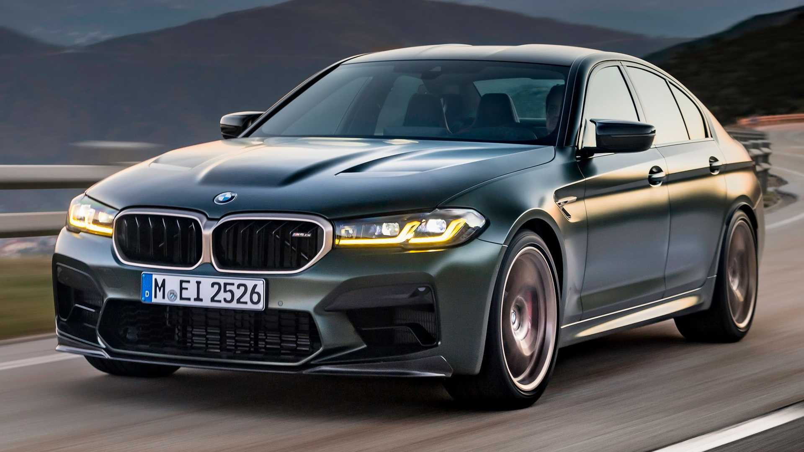
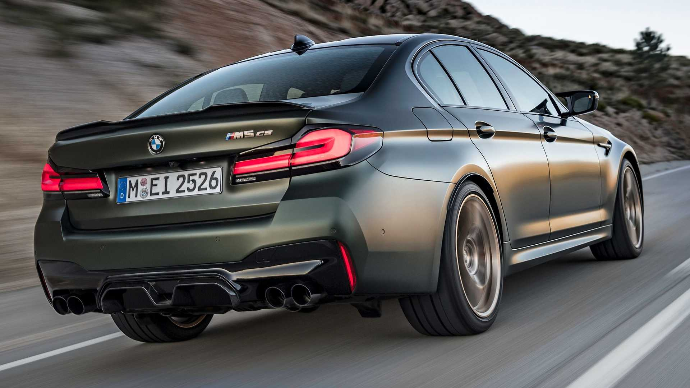

M5 CS ще бъде най-мощната серия 5 на всички времена, произвеждаща 626 конски сили и 553 паунда фута въртящ момент от 4,4-литров V-8 с двойно турбокомпресор. Предполагаме, че M5 CS ще има същата стандартна система за задвижване на четирите колела с дрифт режим за задвижване на задните колела и осемстепенна автоматична скоростна кутия, както в другите модели.
 